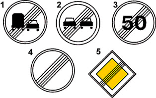
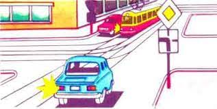
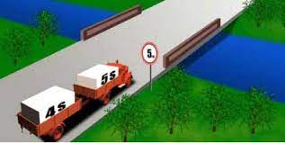
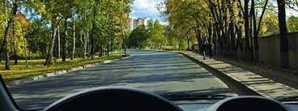
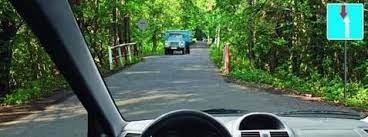
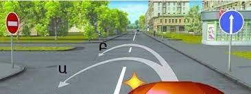
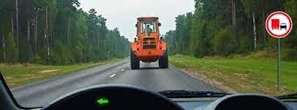
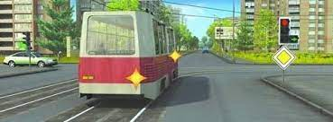
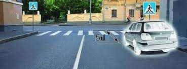

Թեստ 32
30:00
1. "Ճանապարհային երթևեկության անվտանգության ապահովման մասին" ՀՀ օրենքի համաձայն՝ ընդհանուր օգտագործման տրանսպորտային միջոց է համարվում՝
2. ՙՃանապարհային երթևեկության անվտանգության ապահովման մասին՚ ՀՀ օրենքի համաձայն մայթ է համարվում
3. Տրանսպորտային միջոցների շահագործումն արգելվում է, եթե`
4. Տրանսպորտային միջոցների շահագործումն արգելվում է, եթե`
5. Պարտավո՞ր են արդյոք տրանսպորտային միջոցների վարորդները բնակավայրերում ճանապարհը զիջել` կահավորված և նշված կանգառի կետերի տարածքից երթևեկությունը սկսող տրոլեյբուսներին ու ավտոբուսներին:
6. Նշաններից ո՞րն է վերացնում նախկին բոլոր սահմանափակումները:

7. Խաչմերուկը երկրորդը կանցնի`

8. Թույլատրվու՞մ է արդյոք տվյալ իրադրությունում ավտոգնացքի վարորդին անցնել կամուրջի վրայով:

9. Թույլատրված է՞ հետադարձն այս վայրում

10. Այս իրավիճակում

11. Ո՞ր հետագծով է թույլատրված հետադարձ կատարելը

12. Ձախ շրջադարձ կատարելիս
13. Թույլատրվու՞մ է արդյոք վարորդին հատել տրանսպորտային միջոցների կայանման տեղերի սահմանները նշող գծանշման հոծ գիծը:
14. Միջքաղաքային ավտոբուսների երթևեկությունը բնակավայրերից դուրս թույլատրվում է`
15. Պարտադի՞ր է արդյոք օրվա լուսավոր ժամերին լապտերների մոտակա լույսը միացված լինի հատուկ առանձնացված գոտիով, հիմնական հոսքին հանդիպակաց երթևեկող ընդհանուր օգտագործման տրանսպորտային միջոցների վրա:
16. Թույլատրվո՞ւմ է բեռնատարի վարորդին վազանցել տրակտորին, եթե թույլատրելի առավելագույն զանգվածը 3 տոննա է:

17. Այս իրավիճակում ճանապարհը պարտավոր է զիջել

18. Կանգառ կատարելը նշված վայրում
